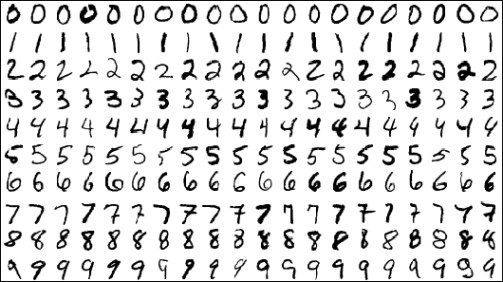
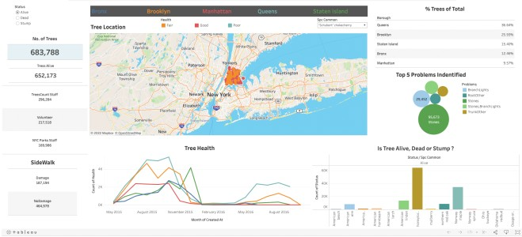

Hello, I'm
Vaibhav Jain
|
Transforming raw data into actionable insights and scalable solutions
About Me
"Not a talker — I'm a doer."
Hello! Hola! Namaste! I'm VJ.
In my professional experience, I've worked primarily in data-driven roles in automation delivery, ranging from junior contributor to direct contributor of leadership. What I find most rewarding is being of service to the clients and teams I've worked with — and producing shared success from which we can all grow.
I've assembled and learned from teams what it means to be high-performing, emphasizing how shared values like trust, vulnerability, and accountability can result in extraordinary achievements.
Clients and colleagues describe me as enthusiastic, energetic, trustworthy, committed, empowering, and detail-oriented.
claudeforge
Scaffold AI agent projects in seconds, not hours.
A CLI tool that generates production-ready AI agent projects with a single command — 25+ pre-configured files, slash commands, memory systems, CI/CD pipelines — all optimized for Claude Code IDE.
$ npx claudeforge create my-app
✓ Detecting stack... Node.js + TypeScript
✓ Generating agents... 3 agents
✓ Creating commands... 10 slash commands
✓ Setting up CI/CD... GitHub Actions
✓ Configuring safety... hooks enabled
⚡ Project ready in 4.2s
Skills & Technologies
The tools and technologies I use to bring ideas to life
AI & Machine Learning
Deep learning, NLP, and MLOpsProgramming
Languages and frameworksData Engineering
Pipelines, warehousing, and ETLCloud & DevOps
Infrastructure and deploymentAnalytics & Visualization
Dashboards and business intelligenceTools & Practices
Workflow and collaborationExperience

Toyota, TX
Data Engineer
- Collaborated closely with Finance teams to develop SOX-compliant automated SQL queries, reducing audit validation time across multi-environment systems and driving process efficiencies.
- Developed end-to-end data pipelines using Python and SQL to ingest and transform data, applying Data Vault techniques in Snowflake to ensure data integrity and scalability across Finance-related processes.
- Contributed the migration of on-premises data infrastructure to the cloud, ensuring minimal downtime and data integrity throughout the transition.
- Designed and implemented scalable data engineering frameworks, enabling teams to automate Data Vault load processes and streamline real-time data ingestion, impacting strategic financial insights for over 1,000 internal stakeholders.
- Leveraged AWS event services to build event-driven data workflows, automating real-time data ingestion from S3 to Finance reporting layers, enhancing timely data delivery for decision-making.
Sezzle Inc, Remote
Analytics Engineer
- Utilized AWS Redshift and SQL to assist in maintaining and optimizing existing data pipelines.
- Contributed to the development of DBT model and supported the design of Redash dashboards for visualizing key metrics.
TakeOff Technologies, MA
Data Analyst Coop
- Built out the data and reporting infrastructure from the ground up using Looker and SQL to provide real-time insights into the product, marketing funnels, and business KPIs.
- Built operational reporting in Looker to find areas of improvement for contractors resulting in quarterly incremental revenue.
- Worked with stakeholders to understand business needs and translate those needs into actionable reports in Looker and Snowflake, saving 18 hours of manual work each week.
- Presented presentations concerning ad-hoc research and findings from disparate sources to upper-level management.
- Utilized techniques and business intelligence (Looker) to create 15+ dashboards and 25+ ad hoc reports to address business problems and streamline processes.

Accenture INC, India
Associate Software Engineer (Data Engineer)
- Co-developed the SQL server database system to maximize performance benefits for clients.
- Developed Custom ETL Solution, Batch processing, and Real-Time data ingestion pipeline to move data in and out of Hadoop using Python and shell Script.
- Experienced in writing complex SQL Queries, Stored Procedures, Triggers, Views, Cursors, Joins, Constraints, DDL, DML, and User Defined Functions to implement business logic.
- Worked extensively with Data migration, Data cleansing, Data profiling, and ETL Processes features for data warehouses.
- Designed and published visually rich and intuitive Tableau dashboards and Crystal Reports for executive decision-making.
- Extensively worked on Data validation between Hive source tables and target tables using automation Python Scripts.
CatchSavvy Solutions, India
Data Engineer Intern
- Strategized ETL processes and maintained Data Pipelines across millions of rows of data which reduce manual workload by 43%.
- Maintained large databases and used various professional statistical techniques to collect, analyze, and interpret financial data from customers and partners; also responsible for carrying out A/B testing.
- Contributed to the design and development of new quantitative models and Data Warehouse to help the company stabilize and maximize efficiency.
Nextsavy Technologies LLP, India
Technology Analyst Intern
- Identified and derived the key features from unstructured data by converting from HDFS to RDBMS using MySQL.
- Maintained large databases and used various professional statistical techniques to collect, analyze, and interpret data from customers and partners.
Education

Northeastern University, Boston
Master of Science, Data Analytics
- Relevant Courses: Predictive Modelling, Data Management and Big Data, Data Mining, Probability & Statistics, Machine Learning, Data Visualization.

NMIMS University, India
Bachelor of Technology, Computer Engineering
- Relevant Courses: C, C++, Data Structure, Algorithm, Microprocessor, DBMS, Java, Advance Java, Operating Systems, Web Technology, Theory of Computation, Compiler Design, Data Mining, Big Data, Artificial Intelligence, Python.
Projects
Facial Emotion Recognition
Achieved accuracy of 69.52% by training the model to identify or perceive the emotions based on the incoming images and subsequently train the series of data.

Handwritten Digit Recognition
Attained 99% accuracy by developing Handwritten Digit Recognition application using MNIST dataset and implementing Convolutional Neural Networks to train images of handwritten digits and build a GUI to process and identify the image drawn.

Fake News Detection
Achieved accuracy of 92% for classifying the news into 'Real' or 'Fake' by building a model coded in Python using TfidVectorizer & PassiveAggressiveClassifier.

Tree Census 2015
Performed exploratory data analysis on Tree Census Database by using Tableau to help understand the hidden patterns within the data, detect any outliers or anomalies, and compelling relationships between variables.
Global Terrorism Visualization
Interactive Power BI dashboard visualizing global terrorism data, enabling exploration of attack patterns, regional trends, and temporal analysis for deeper understanding of worldwide incidents.
Stock Market Prediction using LSTM
The project focuses on transforming data via MinMaxScaler for passing it to Long Short-Term Memory (LSTM) Time Series model developed via Keras.
Certifications
Recommendations
What people say about working with me
Get In Touch
Let's work together and make it a success